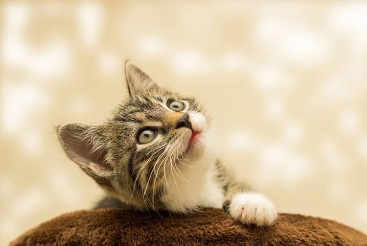

Adote este pobre gatinho que espera por uma família e por um cantinho para chamar de lar. Por trás de cada miado existe um pequeno coração cheio de carinho, esperança e vontade de amar. Leve-me para casa, ofereça-me segurança, conforto e cuidado, e eu retribuirei com ronronados, companheirismo e muito amor. 🐱❤️